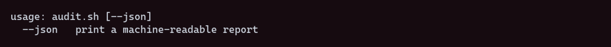

← Family hub

Android TV · read-only audits
debloat-android-tv
A curated Android TV cleanup list with read-only audits, generated per-device scripts and matching restore tools. Nothing runs until you've read it.

git clone https://github.com/Mark44928/debloat-android-tv.git
cd debloat-android-tv
bash audit.sh
- No guessingenabled, disabled and absent targets
- Device profilesgenerated debloat + restore scripts
- HTML reportoffline searchable package view
- Review firstroot scripts never self-run